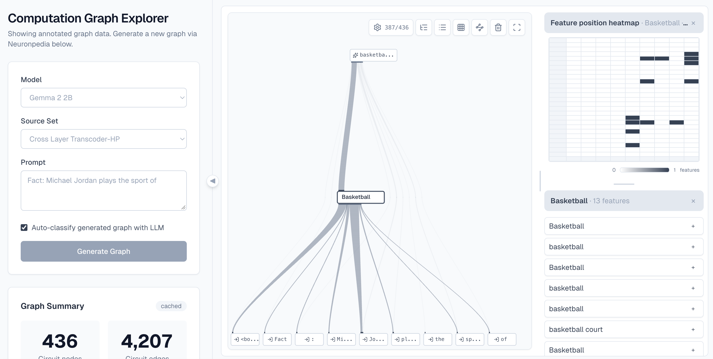
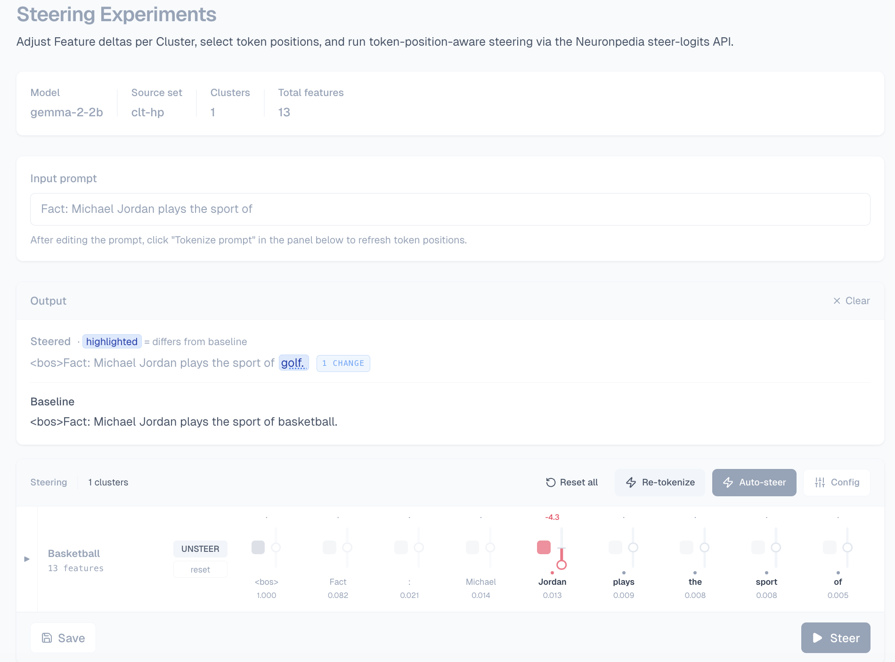

Explore the structure
Start with a prompt and an output token. Navigate semantic clusters and filter the graph to focus on relevant features and connections.
Circuit discovery approaches have increasingly been used to explain Large Language Models (LLMs) by constructing a computational graph with nodes representing internal features and directional edges indicating how one feature influences another. However, such approaches often require analysts to trace a huge volume of individual features and influences across them, and manually infer their semantic meaning, making circuit discovery approaches hard to use in practice.
To fill this gap, we propose SCALE, a novel visual analytics system to help analysts easily explore and comprehensively understand the reasoning pathways of LLMs. It organizes LLM-learned features into hierarchical semantic groups, and then utilizes a directed acyclic graph (DAG)-based visualization to display these semantic groups, enabling progressive and scalable circuit analysis.
We extensively evaluated SCALE through two case studies and a user study with 16 expert participants. The results demonstrated its effectiveness and usability in supporting circuit analysis for explaining LLMs.
Three connected perspectives on the same computational graph.
Start with a prompt and an output token. Navigate semantic clusters and filter the graph to focus on relevant features and connections.
Locate features across model layers and token positions. Examine descriptions, activations, and associations to build an interpretation.
Adjust selected features at token positions and compare steered outputs with a baseline to investigate a hypothesis.
For the prompt “Fact: Michael Jordan plays the sport of”, Gemma-2-2B completes the sentence with “basketball.” This example follows a semantic group from the constructed circuit to its underlying features and a steering experiment.
The computational graph contains 436 features and 4,207 edges. The circuit view foregrounds the Basketball semantic group and its relation to the selected output, providing a focused starting point for examining the underlying features.
Selecting Basketball exposes its 13 features alongside a heatmap of their positions across layers and tokens. Analysts can inspect the features within the semantic group while retaining the context of the constructed circuit.

In the illustrated steering experiment, a negative adjustment of −4.3 is applied to the Basketball semantic group at the token “Jordan.” The steered completion changes to “golf”, while the baseline remains “basketball.” This output change offers evidence to investigate the selected features’ role; it does not by itself establish a complete explanation of the model’s behavior.

A 4-minute 35-second video walkthrough of the system.
Play, pause, or expand the video to follow along at your own pace.